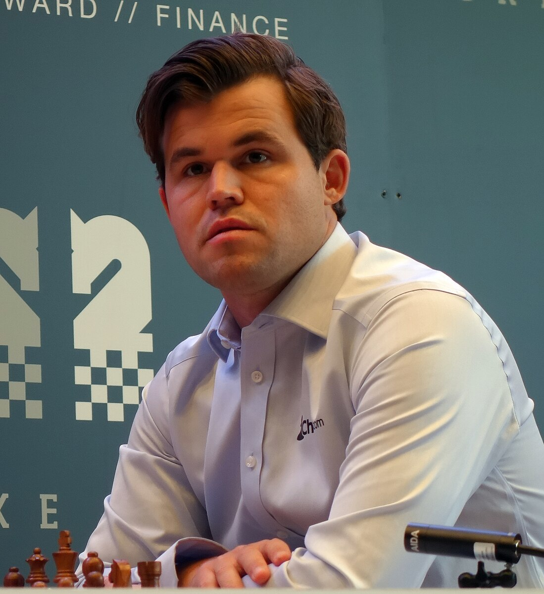

More or less Chess
A very tuff presentation by Julian F, Liam J, and Chance H.
Everything to know:
How All the pieces move
| Chess piece |
How it moves |
| Pawn |
Forward 1 space(option for two in opening), captures diagonally |
| Bishop |
Diagonally, any amount of spaces |
| Knight |
2 spaces one way, perpindicular another way (L shape) |
| Rook |
Left, right, forward, backward any amount |
Queen |
All directions any amount |
| King |
One space at at time all directions |
Important Terms:
- Check: Your king is under immediate attack by your opponents piece.
- Checkmate: Your king is in check, and there is no way to get out of it
- Fork: Two or more of your pieces are under attack and you can only defend one
- Clock: The amount of time you have left to make a move.
- En Passant: You can take your opponents pawn while on the same rank
- Ranks and Files: Ranks are rows, files are columns
- Castle: Your king and rook meet in the middle of one side of a rank and swap
- Pin: You use a piece to pin one of your opponents pieces to another
Important People in Chess
Magnus Carlsen

Magnus Carlsen is a very famous chess player. He is known for his amazing strategy and quick thinking skills. He is recognized as the greatest chess player in the world. He is the five time
chess world champion. He was born on November 30th 1990, in Tønzberg Norway.
Bobby Fischer

Bobby Fischer was a child prodigy at thirteen and the eleventh chess world champion. Bobby was born on March 9th, 1943 in Chicago. He was the best chess player before he sadly passed away on January 17th 2008 due to kidney failure.
Basic Rules of Chess
- White starts and then black goes.
- The goal of the game is to checkmate your opponent
- Running out of time results in a loss
- You can offer a draw to your opponent
- When you are white, queen gets the light square and the black queen gets the dark square
- Pawns that reach the end of the board must promote to any other piece- even if the piece has already been captured
Chess pieces:

The Pawn. The most basic chess piece of them all.